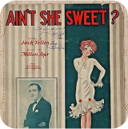
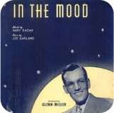

Public domain verwijst naar werken waarvan de auteursrechten zijn verlopen, waardoor ze vrijelijk
kunnen worden gebruikt door iedereen zonder toestemming of betaling aan de oorspronkelijke
rechthebbenden. Dit gebeurt meestal wanneer de copyrighttermijn is verstreken, wat vaak 70 jaar na
de dood van de auteur is, afhankelijk van het rechtsgebied. Werken in het publieke domein kunnen
waardevolle bronnen zijn voor artiesten en producenten die willen samplen zonder juridische
complicaties.

Ain't She Sweet
"Ain't She Sweet" (1927):
Dit klassieke nummer, geschreven door Milton Ager en Jack Yellen, is vaak samplend in moderne muziek,
waaronder hiphop en pop. Het vrolijke deuntje biedt een speelse sfeer die goed werkt in diverse
genres.

The Mood
"In the Mood" (1939):
Dit iconische big bandnummer van Glenn Miller is een geweldig voorbeeld van een jazzstandard die nu
in het publieke domein is. Het herkenbare ritme en de melodie zijn door verschillende artiesten
samplend en opnieuw geïnterpreteerd.
When the Saints Go Marching In
"When the Saints Go Marching In" (traditioneel):
Dit traditionele geestelijke nummer is een vaak gebruikt sample in allerlei muziekstijlen. De
eenvoudige melodie en krachtige boodschap maken het veelzijdig voor remix en sampling.
Ode to Joy
"Ode to Joy" (1824):
Het vierde deel van Beethoven's negende symfonie is een voorbeeld van een klassiek stuk dat
veelvuldig is samplend in moderne muziek. De krachtige melodie en emotionele impact maken het een
inspirerende keuze voor veel artiesten.